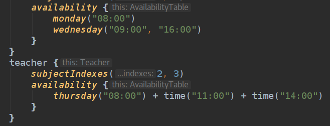

За первую четверть этого года успело релизнуться несколько версий Kotlin. Для начала давайте перечислим основные изменения.
Изменения из 1.2.20:
- добавлена поддержка Gradle build cache;
- улучшена инкрементальная компиляция;
- поддержка IDE для Kotlin style guide;
- хинты в IDE для неявный параметров и контекстов лямбд и значений, которые возвращаются из лямбд;
- поддержан делопмент мод в JavaScript DCE Gradle Task;
- мелкие улучшения.
Изменения из 1.2.30:
- добавлена новая декларация в стандартную библиотеку, которая иммитирует suspend модификатор для лямбд;
- добавлена поддержка для TestNG в kotlin.test;
- притащили поддержку мультиплатформенных модулей для Android;
- добавлена новая вощможность в kapt для репортинга ошибок обработки аннотаций;
- добавлено много новых инспекций и интеншенов в Intellij IDEA, улучшена их производительность;
- поправлены некоторые баги в плагине и компиляторе.
Ну, а теперь подробно взглянем только на интересные фичи. Полный обзор смотрите в оригинальных источниках (ссылки в конце).
Gradle Build Cache & Precise Java Tracking
При использовании версии Gradle 4.3+ вы можете использовать флаги --build-cache или org.gradle.caching=true. В этом случае
плагин будет переиспользовать предыдущие результаты сборки. Например, вы собрали версию приложения под master веткой, затем переключились
на ветку feature_X, собрали снова и вернулись назад на мастер. Если вы воспользуетесь флагом выше, то ваш код не будет пересобран
на мастере, т.к. результаты были закешированы.
Если ваш Java класс изменился так, что это не аффектит ваш Kotlin код, то, в теории, компилятор, может нерекомпилировать ваш Kotlin код. Для того, чтобы воспользоваться этой экспериментальной фичей нужно добавить следующую проперти в gradle.properties.
kotlin.incremental.usePreciseJavaTracking=true
Code Conventions
Ранее были опубликован официальный style guide. Начиная с 1.2.20 форматтер Intellij IDEA поддерживает его.
Клёвые Хинты
Среди изменений прилетело одно, ну очень полезное, для разработки и использования Kotlin DSL - это хинты для контекстов лямбд, их неявных параметров и результатов выполнения этих лямбд. Выглядит всё это следующим образом:

Интересные Интеншены
Появился интеншен для конвертации функции let <-> run и also <-> apply. По сути, конвертер превращает одну функцию в другую и наоброт. Пожалуй эта фича хороша по следующей причине. Не секрет, что из-за этой кучки функций постоянно появлялись сомнения что-же использовать, теперь с этим проще и подобные фичи помогают запоминать и укладывать в голове назначение этих функций, либо каждый раз конвертировать.
Вставка Kotlin кода в пакет. Не до конца понимаю назначение фичи, но выглядит как такой, быстрый рефакторинг. По сути, вы делаете Ctrl + X, т.е. вырезаете класс, а затем указываете в какой пакет его положить, жмете Ctrl + V и код перемещается в сгенерированный файл.
Analyzing Data Flow
Анализ потоков данных теперь поддержен для смешаных Java-Kotlin проектов. Круто! Если кто-то не знает, что это, то в Intellij IDEA есть фича в меню Analyze, которая помогает вам в большом и запутанном легаси проекте понять откуда приходят данные в то или иное место или куда они уходят. Фича классная, помогает не нажимать бесконечно Ctrl + B, а увидеть, например, дерево вызовов метода get и понять куда забирают наши данные и как с ними работают.
Вместо заключения
Приятно видеть, что разработчики принимают множество пул реквестов от сторонних разработчиков.
На этом, на мой взгляд, интересные нововведения исчерпаны. Ниже ссылки на источники. Успехов!
Источники:
comments powered by Disqus